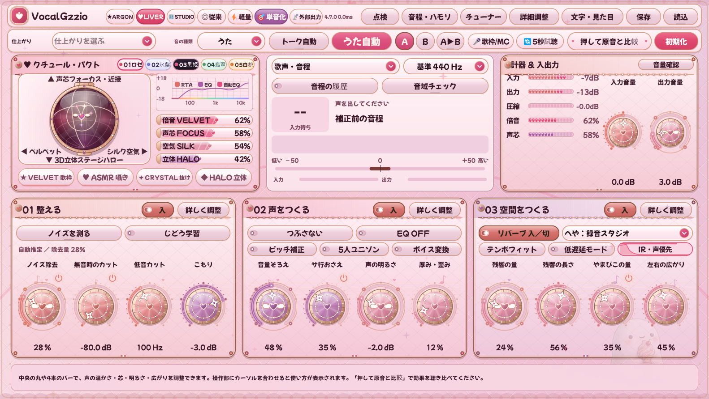

VocalGzzio 4.7.0 · Windows + Mac · Couture & Live Streamer Edition
声をつくる。
歌と配信に集中する。
小さなつまみを探す時間から、音を聴く時間へ。
🎤歌枠⇄雑談MC 1クリック切替、🔄5秒試聴ルーパー、2D声質重力場オーブ、5色のクチュール・コスメテーマ、片耳マイク中央化、配信ブリッジ、空間IR残響。全体を見渡しながら、欲しい仕上がりに近づける。


🎤歌枠⇄雑談MC ＆ 🔄5秒試聴ルーパー
曲間のトークでは「🎤歌枠/MC」1クリックで歌設定を保ったまま残響やハモリを一時オフ。「🔄5秒試聴」で5秒録音すれば、骨伝導のない客観的な自分の声をループ聴き比べながら両手で音作りできます。
クチュール5色 ＆ Argon 2D 重力場オーブ
♥LIVERモードには高級コスメ着想の5色（01ロゼ・02氷紫・03黒姫・04翡翠・05白桃）を搭載。母音へ倍音を加える「倍音」、輪郭を出す「声芯」、息づかいの「空気」、モノラル互換の「立体」を直感操作できます。
片耳マイク中央化 ＆ 配信出力ブリッジ
インターフェースの片側入力のマイクを自動で両耳中央へ揃える「🎯単音化」と、VB-CABLEやSYNCROOM等へ直接送る「📡外部出力」、歌っている最中の残響を自動回避する「IR・声優先ダッキング」を搭載しています。
音の土台から、余韻まで。
深層ノイズ学習と電源ハム除去、音量のばらつき補正、サ行おさえ、声の明るさ。必要なところを整え、6部屋の空間IRリバーブ「へや」や手持ちのカスタムIR（.wav/.aiff）、声優先ダッキングで歌詞が埋もれない余韻を足します。
| 仕上がり | 狙う変化 |
|---|---|
| 自然に整える | 抑揚を残し、軽く整える |
| 歌詞を前へ | こもりを引き、言葉の輪郭を出す |
| 丸く親密に | 硬い高音を丸く、近い響きへ |
| 太く力強く | 強弱をそろえ、密度と軽い歪みを加える |
| 語りをくっきり | 残響を切り、言葉を近く届ける |
| 広く響かせる | 長い余韻と薄いやまびこを足す |
使う前に知っておきたいこと
内蔵の空間IRは計算生成した残響データです（実在の部屋の録音ではありません）。任意の `.wav` / `.aiff` IRファイルの読み込みにも対応しています。ノイズ除去や補正の適量は音源によって変わります。まず体験版で、ご自身の声や機材との相性をお確かめください。
配布と対応環境
Windows 10 / 11の64ビット版で、VST3と単体起動アプリを利用できます。Mac版はmacOS 11以降、Appleシリコン／Intel両対応で、VST3・AU・単体起動アプリとインストーラーを同梱しています。Mac版のApple開発者署名・公証、Windowsインストーラーの電子署名は未付与です。購入前に体験版で相性をご確認ください。
製品版はBOOTHの購入履歴から取得できます。体験版は60秒ごとに0.6秒間音量が下がり、設定・プリセットの保存と復元・A/B比較が制限されます。既存の価格・販売条件は商品ページをご確認ください。